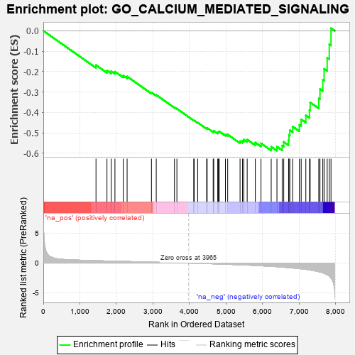
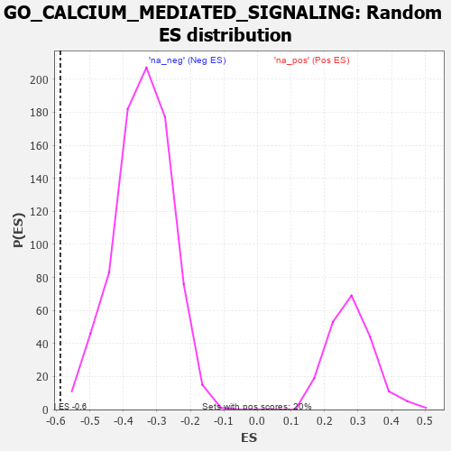

| | | Dataset | 7d |
| Phenotype | NoPhenotypeAvailable |
| Upregulated in class | na_neg |
| GeneSet | GO_CALCIUM_MEDIATED_SIGNALING |
| Enrichment Score (ES) | -0.5877364 |
| Normalized Enrichment Score (NES) | -1.7212365 |
| Nominal p-value | 0.0 |
| FDR q-value | 0.033017125 |
| FWER p-Value | 0.877 |
Table: GSEA Results Summary

Fig 1: Enrichment plot: GO_CALCIUM_MEDIATED_SIGNALING
Profile of the Running ES Score & Positions of GeneSet Members on the Rank Ordered List
| PROBE | GENE SYMBOL | GENE_TITLE | RANK IN GENE LIST | RANK METRIC SCORE | RUNNING ES | CORE ENRICHMENT | | 1 | PTBP1 | | | 1441 | 0.402 | -0.1683 | No |
| 2 | JPH1 | | | 1741 | 0.347 | -0.1944 | No |
| 3 | NFAT5 | | | 1856 | 0.326 | -0.1978 | No |
| 4 | CCR4 | | | 1959 | 0.312 | -0.2002 | No |
| 5 | SYK | | | 2186 | 0.278 | -0.2194 | No |
| 6 | KSR2 | | | 2292 | 0.261 | -0.2239 | No |
| 7 | BTK | | | 2958 | 0.156 | -0.3025 | No |
| 8 | CHP1 | | | 3089 | 0.138 | -0.3143 | No |
| 9 | CHERP | | | 3587 | 0.062 | -0.3749 | No |
| 10 | FIS1 | | | 3654 | 0.051 | -0.3815 | No |
| 11 | MTOR | | | 4114 | -0.025 | -0.4386 | No |
| 12 | PLCE1 | | | 4127 | -0.028 | -0.4392 | No |
| 13 | FHL2 | | | 4222 | -0.046 | -0.4495 | No |
| 14 | LRRK2 | | | 4467 | -0.087 | -0.4774 | No |
| 15 | JPH3 | | | 4481 | -0.091 | -0.4760 | No |
| 16 | NMUR2 | | | 4646 | -0.127 | -0.4924 | No |
| 17 | ITPR1 | | | 4661 | -0.130 | -0.4898 | No |
| 18 | PLCG1 | | | 4770 | -0.151 | -0.4983 | No |
| 19 | MYO5A | | | 4787 | -0.155 | -0.4951 | No |
| 20 | P2RX4 | | | 4813 | -0.161 | -0.4929 | No |
| 21 | ACKR4 | | | 4981 | -0.194 | -0.5074 | No |
| 22 | PDPK1 | | | 5043 | -0.207 | -0.5082 | No |
| 23 | GRIN1 | | | 5381 | -0.291 | -0.5409 | No |
| 24 | EFHB | | | 5447 | -0.306 | -0.5388 | No |
| 25 | ACTN3 | | | 5486 | -0.315 | -0.5330 | No |
| 26 | SPHK1 | | | 5576 | -0.339 | -0.5329 | No |
| 27 | ADA | | | 5798 | -0.405 | -0.5471 | No |
| 28 | CXCR5 | | | 5954 | -0.456 | -0.5514 | No |
| 29 | RGN | | | 6233 | -0.547 | -0.5680 | Yes |
| 30 | TRPM4 | | | 6390 | -0.612 | -0.5672 | Yes |
| 31 | DYRK2 | | | 6533 | -0.677 | -0.5623 | Yes |
| 32 | P2RX5 | | | 6576 | -0.699 | -0.5441 | Yes |
| 33 | EGFR | | | 6708 | -0.765 | -0.5349 | Yes |
| 34 | GSK3B | | | 6719 | -0.768 | -0.5104 | Yes |
| 35 | NCALD | | | 6743 | -0.781 | -0.4870 | Yes |
| 36 | NMUR1 | | | 6821 | -0.828 | -0.4689 | Yes |
| 37 | CCR2 | | | 7003 | -0.939 | -0.4602 | Yes |
| 38 | GRM5 | | | 7053 | -0.969 | -0.4338 | Yes |
| 39 | PTPRJ | | | 7180 | -1.054 | -0.4142 | Yes |
| 40 | CIB1 | | | 7280 | -1.152 | -0.3880 | Yes |
| 41 | ANK2 | | | 7298 | -1.170 | -0.3508 | Yes |
| 42 | CD22 | | | 7534 | -1.449 | -0.3317 | Yes |
| 43 | CALM1 | | | 7567 | -1.499 | -0.2854 | Yes |
| 44 | MCU | | | 7644 | -1.637 | -0.2399 | Yes |
| 45 | TRPM2 | | | 7680 | -1.712 | -0.1868 | Yes |
| 46 | PDE4D | | | 7764 | -1.944 | -0.1319 | Yes |
| 47 | PKD2 | | | 7822 | -2.167 | -0.0662 | Yes |
| 48 | CALM3 | | | 7869 | -2.525 | 0.0129 | Yes |
Table: GSEA details [plain text format]

Fig 2: GO_CALCIUM_MEDIATED_SIGNALING: Random ES distribution
Gene set null distribution of ES for GO_CALCIUM_MEDIATED_SIGNALING